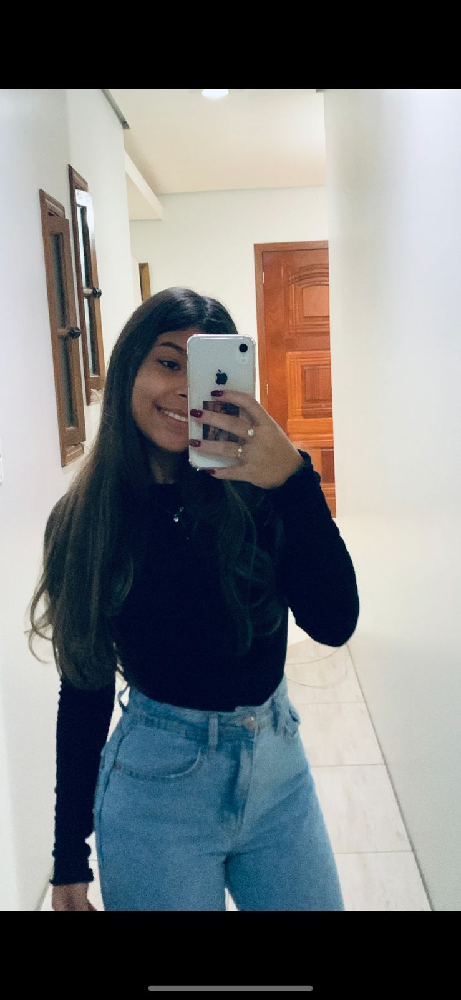

Sobre: meu nome é Gabriely De Britto De Mello, tenho 16 anos, faço curso no São Lucas, to fazendo TI e por
incrivel que pareça to começando a gostar cada dia mais, coisa que quando começou eu nao gostei muito, agora
estou começando a gostar, talvez pegando a pratica ja. Estudo pela manhã no ensino medio e faço curso a tarde.
Sou muito extrovertida, converso bastante e sou bem direta, nessa oportunidade que meus pais me deram para um
futuro melhor, estou tentando agarrar a oportunidade, tentar algo melhor pro meu futuro pra conseguir ser bem
sucedida e nao depender de ninguem.

Qualidade:Sincera.
Defeito:Falo demais.
Area em que quero trabalhar: Em software ou websites na area da TI.